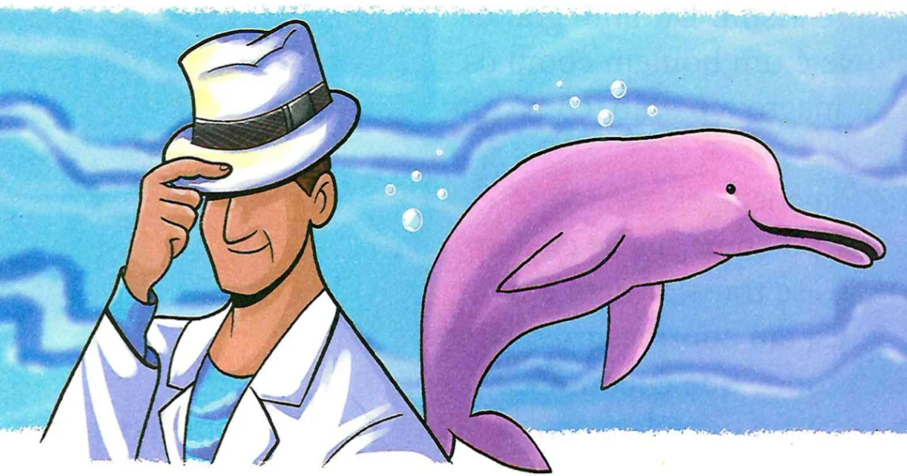

O Boto Cor De Rosa
No coração da Amazônia, onde as águas escuras do rio Amazonas se misturam com a exuberante vegetação da floresta tropical, vive o maior e mais lendário de todos os botos cor-de-rosa. Este boto, conhecido simplesmente como "O Maior", era uma figura mística e imponente que os ribeirinhos acreditavam ser o guardião espiritual das águas.
Diziam as lendas que O Maior tinha o poder de controlar as correntes do rio e proteger os pescadores em suas jornadas. Sua pele cor-de-rosa brilhava intensamente sob a luz da lua cheia, criando um espetáculo mágico que enchia os corações dos que o viam com reverência e respeito.

Uma vez por ano, durante o Festival das Águas, O Maior emergia das profundezas do rio para celebrar com os habitantes locais. Era um evento de grande festividade, onde os ribeirinhos se reuniam para honrar a presença do boto e renovar seus votos de proteção ao rio e à vida que ele sustentava.
Conta-se que O Maior tinha um coração generoso e uma sabedoria ancestral. Ele era conhecido por conceder bênçãos aos que o respeitavam e protegiam o ambiente natural ao seu redor. Os mais velhos diziam que encontrar O Maior era um sinal de sorte e prosperidade, um encontro que poderia mudar a vida daqueles que o testemunhavam.
A lenda de O Maior continuava viva através das histórias contadas ao redor das fogueiras nas noites escuras da floresta. Era uma lembrança constante da interligação entre o mundo humano e o mundo natural, um lembrete de que as águas do Amazonas não eram apenas fonte de sustento, mas também um lar para ser respeitado e protegido por gerações futuras.
Voltar A Seleção De Histórias
Jorge Vinicius Rocha Cantarinho 2°L